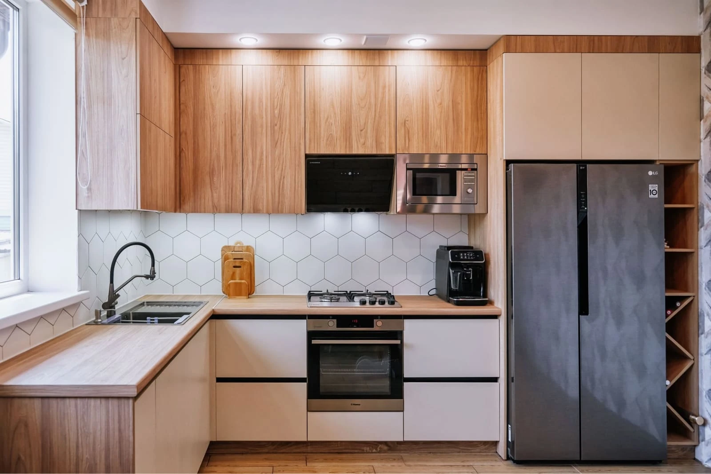
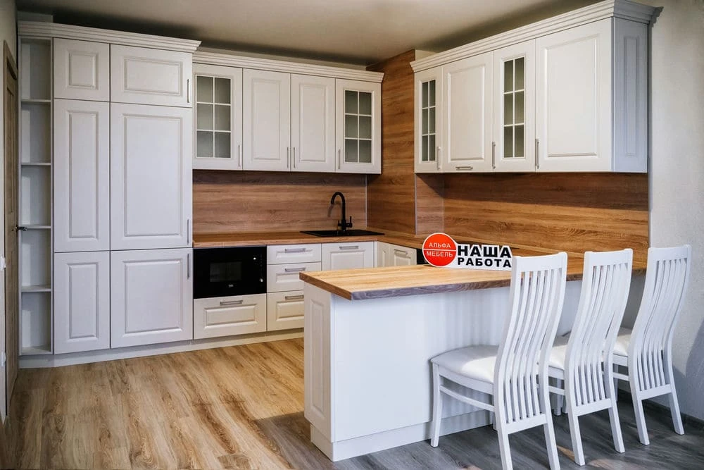
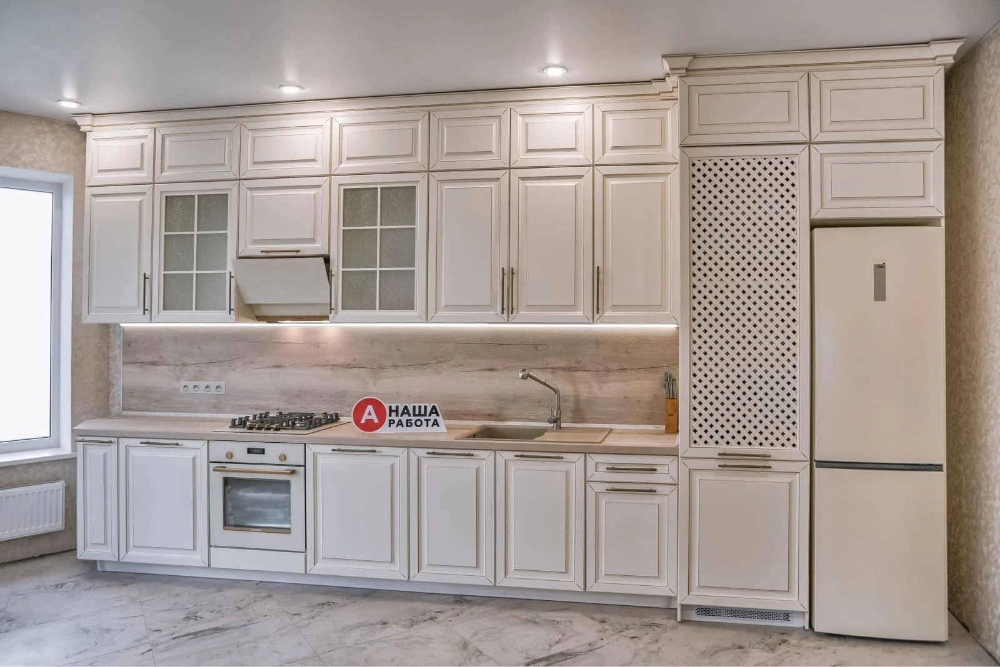
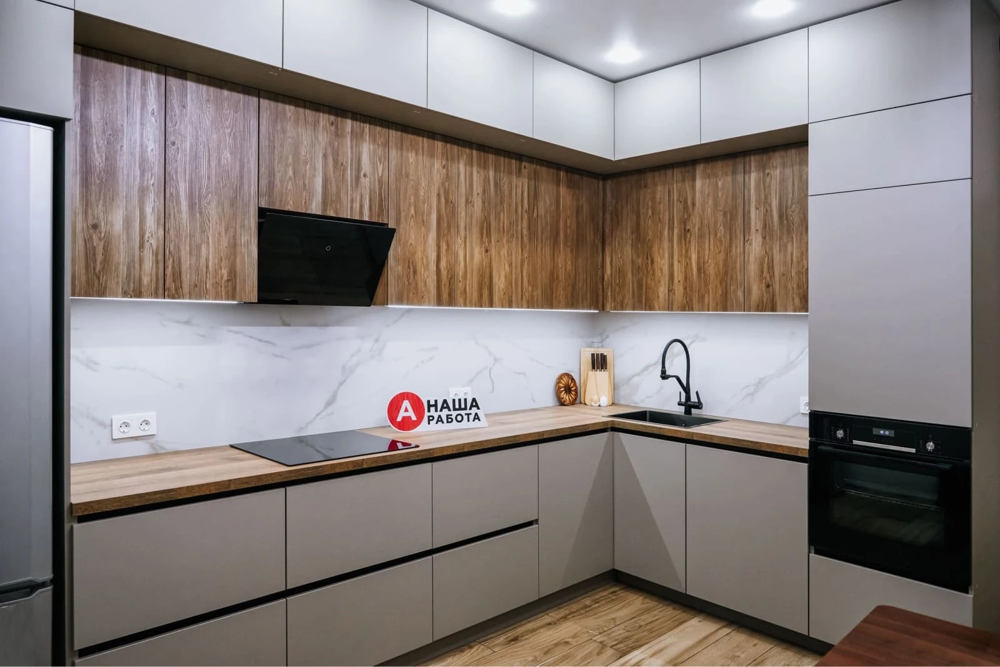
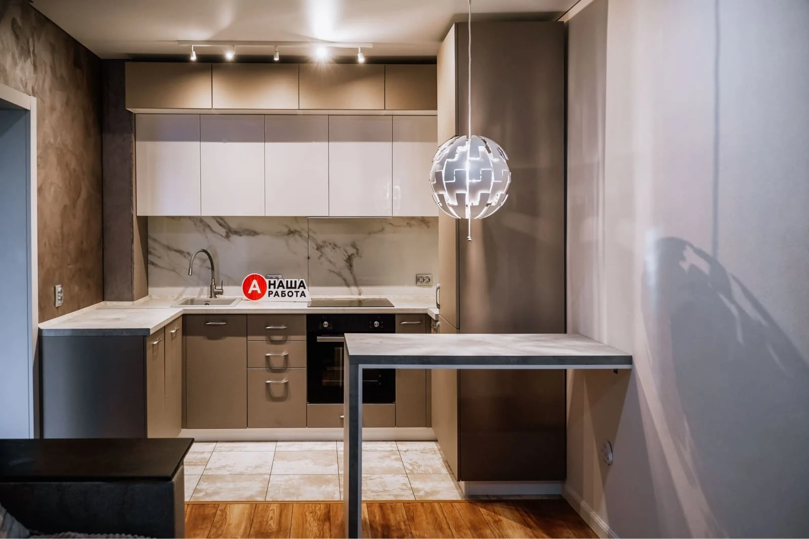

Кухни, созданные
под Ваше
помещение
Проектируем и производим мебель в Кургане. Учтём размеры, коммуникации и Ваши пожелания к хранению и материалам.
Обсудить кухню
с 2013года
производим мебель

1700+
реализованных проектов

37дней
средний срок изготовления
и установки

+7 (961) 570-57-01Найдём стиль
Вашей кухни
Сдержанные фасады, тёплое дерево или классические детали. Посмотрите, как разные решения выглядят в готовом интерьере.
и оттенки дерева.
и спокойная палитра.

Ар-декоВыразительные деталии контраст материалов.
Кухни для разных
интерьеров
У каждой кухни свои размеры, материалы и задачи. На основе понравившегося решения создадим Ваш проект.